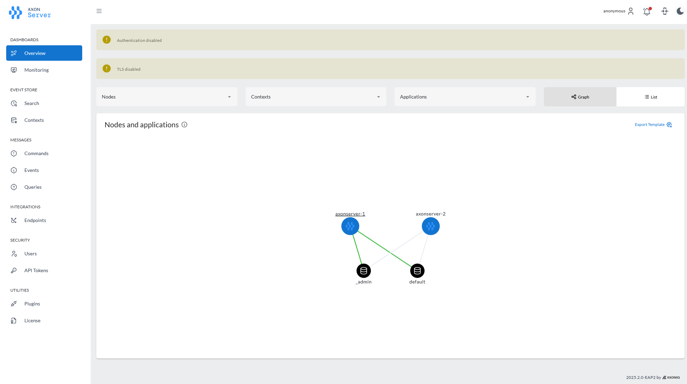
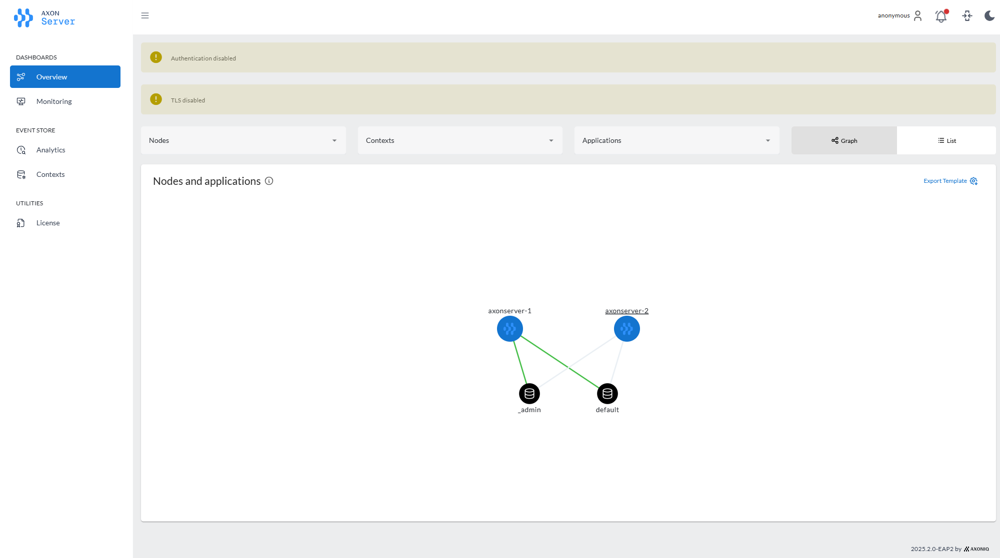
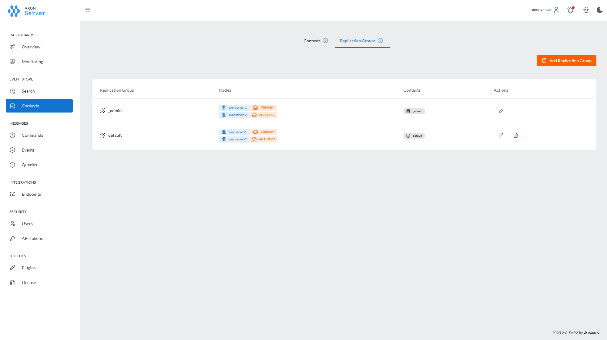
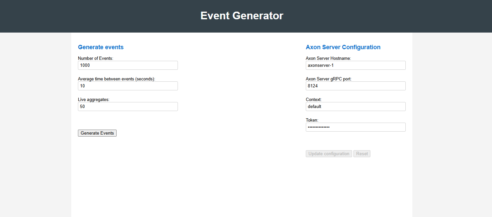
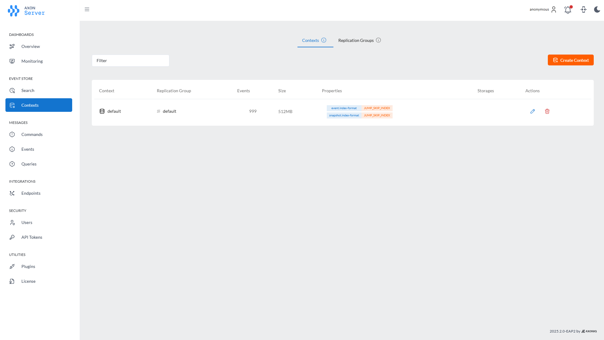
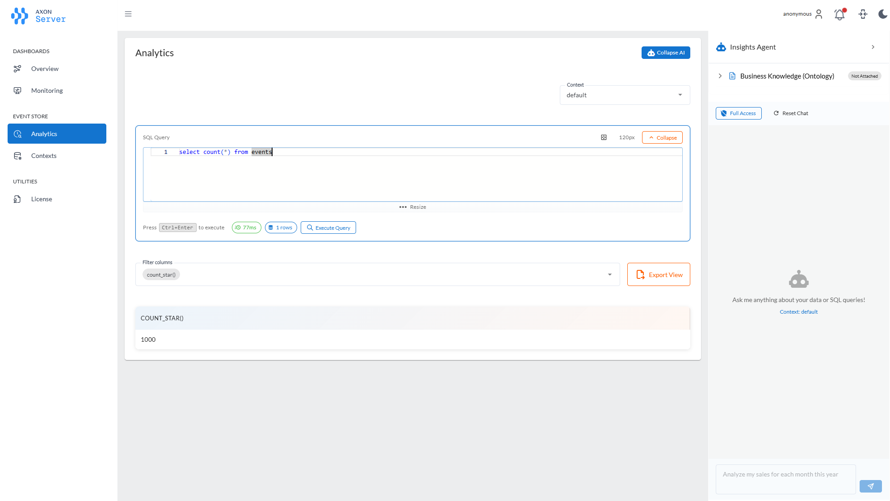
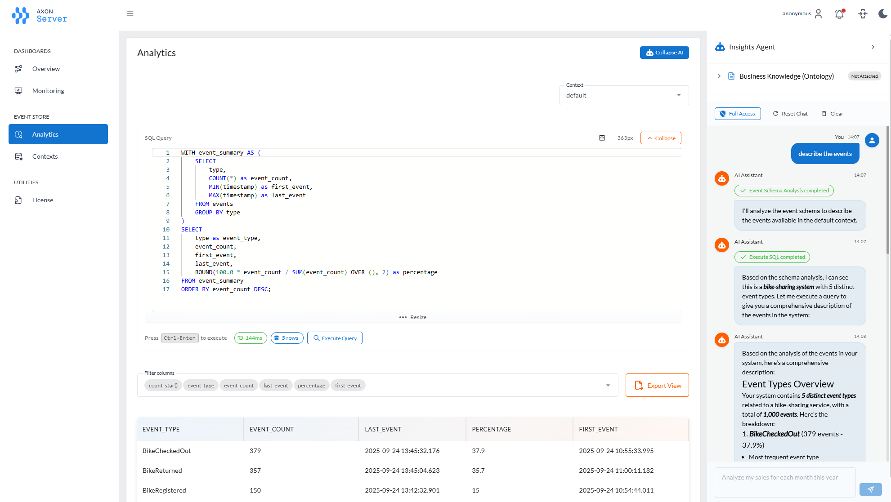

Axon Server Analytics—Quick Start
Axon Server version 2025.2.0-EAP2 contains a preview of Axon Server Analytics, which provides advanced analytics capabilities for your Axon applications. To use the analytics features, you need to set up an Axon Server cluster with an analytics node.
This guide outlines the installation process for an Axon Server cluster with an Axon Server analytics node, covering two primary scenarios:
-
Creating a new cluster with generated demo data
-
Setting up a new cluster with an existing event store
It also describes how to use the Insights Agent to interact with your event data using natural language queries.
Prerequisites
Before you begin, ensure you have the following prerequisites in place:
-
Anthropic API key
-
Docker installed on your machine
Scenario 1: Creating a Cluster and Generating Demo Data
This scenario is ideal for users who want to quickly set up an Axon Server cluster with an Analytics Node in a Docker environment and want to use generated demo data for testing and exploration.
Steps
-
Prepare your environment. Ensure you have a suitable directory for your new Axon Server cluster.
-
Extract the zip file download from the trial page in the target directory.
The zip file contains a docker compose file to set up two Axon Server nodes and an event generator.
The first Axon Server node is a PRIMARY node. This node is used by clients to connect to the event store. The second node is an Analytics Node. This node connects to the PRIMARY node and provides analytics capabilities. The event generator generates demo data and sends it to the PRIMARY node. Axon Server’s replication process replicates the data to the Analytics Node.
-
Replace <your_anthropic_api_key> with your actual key in the docker-compose.yml file.
-
Start the Axon Server Docker containers for your Axon Server cluster.
docker compose up -d -
Verify the containers. Check the Axon Server console or logs to ensure that the Axon Server is started correctly. To log on to the Axon Server console, use the URL http://localhost:8024.
The overview shows two Axon Server nodes, axonserver-1 and axonserver-2, both connected to the
defaultand_admincontext. The green lines indicate thataxonserver-1is the leader for both contexts.The container
axonserver-2is an Analytics Node. The menu on the left shows fewer options as this node is an analytics node. The Event store menu has the analytics option.The
Contextpage shows thedefaultcontext. Thedefaultcontext is empty as no events have been generated yet. In the replication group tab, you can see thataxonserver-1is a primary node for both replication groups, andaxonserver-2is an analytics node for both replication groups. -
Generate demo data. Use the URL http://localhost:8080 to open the event generator.
This page allows you to configure and start the event generation process. You can specify the number of aggregates, events per second, and other parameters. Click the
Startbutton to begin generating events. If you need to change the configuration to connect to a different Axon Server instance, you can do so by updating the information in theConfigurationsection and clicking theSettingsbutton.
Scenario 2: Setting Up a New Cluster with an Existing Event Store
This scenario is for users who have an existing Axon Server event store (for example, from a previous installation or a migrated system) and want to set up a new Axon Server cluster including an Analytics Node in a Docker environment.
Prerequisites
-
An existing Axon Server event store (data files)
-
Access to the Axon Server Docker image (latest version supporting Analytics Node)
Steps
-
Set up the environment. Follow steps 1-3 from the previous section.
-
Create a directory for the event store data:
mkdir -p node1/events/default -
Place your existing event store data into the node1/events/default directory. This consists of the
.events,.nindex, andglobal-index-*.xreffiles from the existing event store. -
Start the Axon Server Docker containers.
docker compose up -d axonserver-1 axonserver-2The docker-compose file contains three services, two axon server nodes and an event generator. In this scenario, you only need to start the two Axon Server nodes.
-
Verify the container. Check the Axon Server console or logs to ensure that the Axon Server is started correctly. To log on to the Axon Server console, use the URL http://localhost:8024.
The
Contextpage shows thedefaultcontext. Thedefaultcontext contains the event store data you placed in thenode1/events/defaultdirectory. You can see the number of events in the context. -
Verify the second container. Check the Axon Server console or logs to ensure that the Axon Server is started correctly. To log on to the Axon Server console, use the URL http://localhost:8025.
The overview page on the second node shows the two nodes connected. The menu on the left shows fewer options as this node is an analytics node. The Event store menu has the analytics option.
Using the Insights Agent
-
Open the Analytics page. Open the Axon Server Console at http://localhost:8025 and click on the “Event Store” - “Analytics” menu item.
The page has two sections: on the left there is a SQL editor, and on the right there is a chat interface. In the SQL editor, you can enter SQL queries to query the event store. You can query the events by selecting from the
eventstable. Theeventstable has the following columns:-
token: The global index of the event. -
eventIdentifier: The unique ID of the event. -
aggregateId: The ID of the aggregate that the event belongs to. -
aggregateType: The type of the aggregate that the event belongs to. -
type: The type of the event. -
revision: The revision of the event. -
data: The payload of the event. -
timestamp: The timestamp of the event. -
metaData: The metadata of the event.
-
-
Start a chat. Enter a question in the chat input field at the bottom of the page and press Enter or click the send button (paper plane icon) to submit your question. The
Insights Agentwill process your question and provide a response based on the event data available in the Axon Server event store.